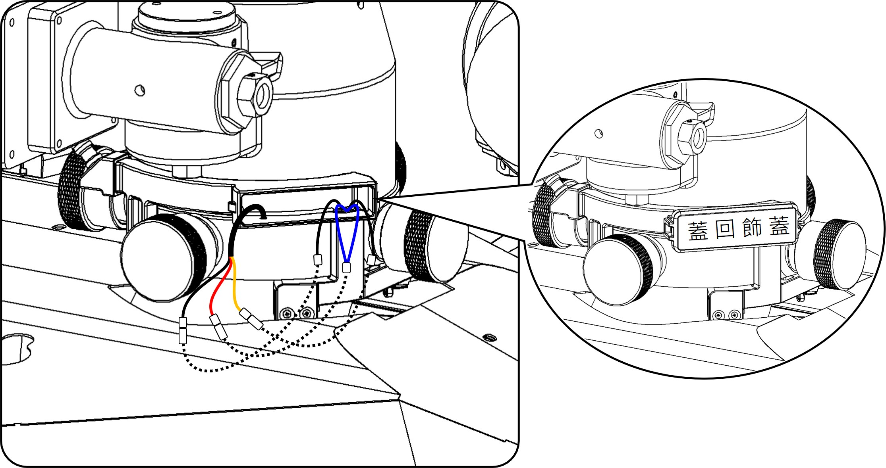

1 / 3
拆卸損壞組件
1. 先將砲塔四個固定環轉至OPEN，打開飾蓋。
工具：X ║ 零件：X
2. 將限位開關集線盒內線組剪掉，再將砲塔抽離。
工具：斜口鉗 ║ 零件：X
3. 使用六角板手將損壞的限位開關座拆卸。
工具：六角板手 ║ 零件：［半圓頭內六角螺絲M5x20］*2
2 / 3
安裝新組件與復位
1. 將新的限位開關座鎖上並將砲塔端線組穿過新座孔位。
工具：六角板手 ║ 零件：［半圓頭內六角螺絲M5x20］*2
2. 將砲塔扣回去並轉至LOCK。
工具：X ║ 零件：X
3 / 3
線路壓接與測試
1. 將線組前端剝皮，使用壓接鉗將公母端子分別壓接至線路上。
工具：壓接鉗、斜口鉗 ║ 零件：壓接端子(公/母)

進行端子壓接，將線組對插完成並收進集線盒內，開啟電源測試完成維修